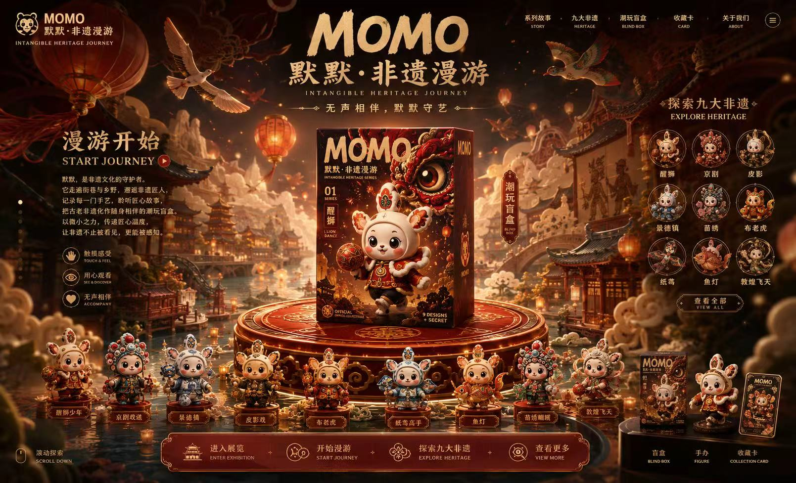
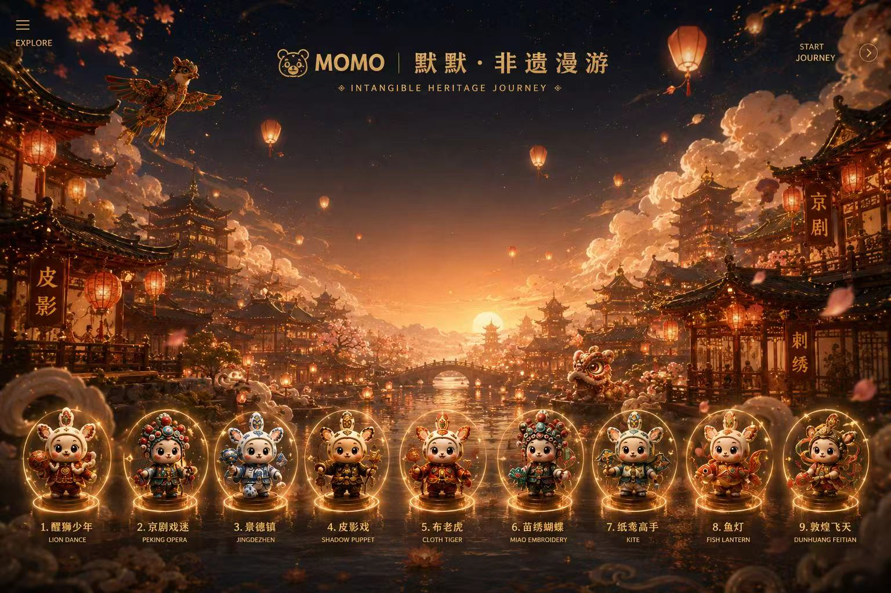
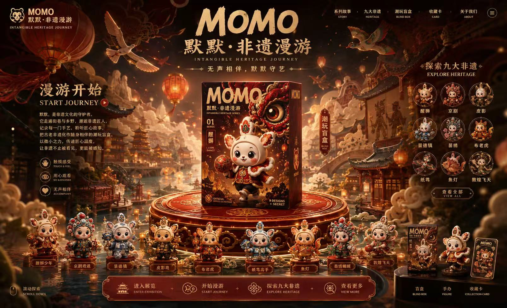

移动灵珠，照见小镇深处

点击功能区域，开启非遗漫游

模型占位 · MODEL PREVIEW
九盏灵灯，藏着九段非遗故事

MOMO · 非遗结缘签
醒狮少年
鼓点一响，百厄皆退。愿你心有热望，步步生风。
典藏 · HERITAGE移动灵珠，照见小镇深处


模型占位 · MODEL PREVIEW
九盏灵灯，藏着九段非遗故事

鼓点一响，百厄皆退。愿你心有热望，步步生风。
典藏 · HERITAGE